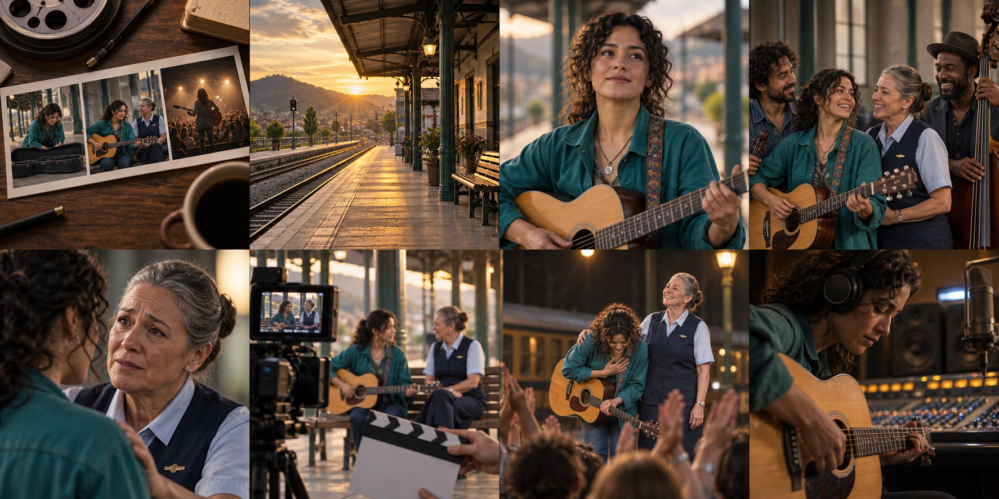

Comedy
A film that aims to make you laugh.
A group of friends keeps making the same silly mistake.
Comedy
Audio text
Comedy. A group of friends keeps making the same silly mistake.

Unit 4 · Sessions 9–10
Tell the story. Explain your reaction.
Help someone choose what to watch.
Vocabulary, grammar and pronunciation
Learn to introduce a film, summarize its plot, support a review and compare two music-video selections.
No matching topic. Try another word.
Your group is choosing a film. Start with its genre, then explain why it fits the audience.
A film that aims to make you laugh.
A group of friends keeps making the same silly mistake.
Comedy. A group of friends keeps making the same silly mistake.
A story about relationships, emotions or difficult choices.
A musician must choose between a job and her dream.
Drama. A musician must choose between a job and her dream.
A tense story that keeps you wondering what will happen.
A detective follows a stranger who knows her secret.
Thriller. A detective follows a stranger who knows her secret.
A film that aims to frighten the audience.
Someone hears footsteps in an empty house.
Horror. Someone hears footsteps in an empty house.
A story driven by physical challenges and fast events.
An explorer escapes through a crowded city.
Action. An explorer escapes through a crowded city.
A story that imagines science, technology or other worlds.
An astronaut discovers a signal from another planet.
Science fiction. An astronaut discovers a signal from another planet.
A way of making films with drawn or digitally created moving images.
An animated adventure can also be a comedy or a drama.
Animation. An animated adventure can also be a comedy or a drama.
A film that explores real people, events or subjects.
A filmmaker follows wildlife in its natural environment.
Documentary. A filmmaker follows wildlife in its natural environment.
“I like everything” gives little information. Name the element you mean: plot, acting, setting or soundtrack.
Tap a vocabulary word to hear it at 0.75× speed.

The connected events of a story.
The plot follows a musician who discovers an unfinished melody.
The place and time of a story.
The film is set in a small railway station in the present day.
A person in the story.
Mara is the main character; she plays the guitar.
The group of actors in a film.
The cast includes both new and experienced actors.
The way an actor plays a role.
The lead actor gives a convincing performance.
One part of a film, usually in one place or period of time.
My favorite scene takes place on the platform.
The final part of the story.
Please do not reveal the ending.
The music used in a film.
The soundtrack connects the scenes through one melody.
Plot. Setting. Character. Cast. Performance. Scene. Ending. Soundtrack. The film is set in a railway station. Mara is the main character. The soundtrack connects the scenes through one melody.
Tap Prequel, Original or Sequel to hear its pronunciation at 0.75×.
Use the present perfect when the experience matters and you do not place it at a finished past time.
| Use | Pattern | Example |
|---|---|---|
| Affirmative | I/you/we/they + have; he/she/it + has | I have seen it. She has watched it. |
| Negative | have/has + not + participle | I haven’t seen the sequel. He hasn’t heard the soundtrack. |
| Question | Have/Has + subject + participle? | Have you seen the film? Has she heard this song? |
| Short answer | Yes/No + pronoun + auxiliary | Yes, I have. No, she hasn’t. |
| Base | Past simple | Past participle |
|---|---|---|
| see | saw | seen |
| hear | heard | heard |
| be | was/were | been |
| make | made | made |
| win | won | won |
| watch | watched | watched |
| listen | listened | listened |
In experience questions, ever means “at any time in your life up to now” — alguna vez. It does not tell us whether the experience happened.
Have + subject + ever + past participle…?
Have you ever seen a silent film?
Has she ever heard this soundtrack?
Ever goes after the subject and before the participle in these questions. Possible answers: Yes, I have or No, I haven’t.
Never means “not at any time up to now” — nunca. It states that the experience has happened zero times.
Subject + have/has + never + past participle.
I have never seen a silent film.
She has never heard this soundtrack.
Never goes between have/has and the participle. It already makes the meaning negative, so do not add not.
| Question with ever | Positive answer | Negative answer with never |
|---|---|---|
| Have you ever seen a musical? | Yes, I have. I’ve seen two. | No, I haven’t. I’ve never seen one. |
| Has Elena ever heard this song? | Yes, she has. She knows the chorus. | No, she hasn’t. She has never heard it. |
Tap each example to hear the complete sentence at 0.75×.
The action is complete, sometimes earlier than expected.
Already usually goes between have/has and the participle.
We want to know whether the expected action has happened by now.
Yet usually goes at the end of the question.
The action has not happened up to now, but it may happen later.
Yet usually goes at the end of a negative sentence.
The action happened very recently.
Just goes between have/has and the participle.
Have you ever seen a silent film? Yes, I have. I have seen two. Has Elena heard this soundtrack? No, she has not. I have already watched the film, but I have not seen the sequel yet. The band has just released a song.
Use for + duration and since + starting point for a situation continuing until now.
I’ve been a fan for five years.
I’ve been a fan since 2021.
“Since five years” is incorrect: five years is a duration.
“Have you seen it?” asks about experience. “When did you watch it?” asks about a particular occasion.
I’ve seen this film twice.
We count experiences in a period that reaches now. No finished past date is given.
I watched it last Saturday.
The occasion is located in a finished past period: yesterday, last Saturday, two years ago, in 2000.
| Intention | Model | Why this tense? |
|---|---|---|
| Experience | I’ve seen it twice. | Present perfect: experience up to now. |
| A dated occasion | I watched it last Saturday. | Past simple: the time is finished. |
| Plot summary | The story follows a musician. | Present simple: we describe the story as it unfolds in the film. |
Have you seen The Last Platform? Yes, I have. When did you watch it? I watched it last Saturday. What is it about? The story follows a young musician who finds an unfinished melody.
A plot summary explains who wants what, what gets in the way and how the events connect.
Original fictional classroom story · This complete recount includes the final event.
Mara waits at a small railway station with her guitar. She hopes to find work as a musician.
She discovers an old melody inside the case. She wants to find the person who wrote it.
Elena recognizes the music, but the final part is missing. They rehearse together and try to complete it.
Eventually, they perform for the commuters. Their music changes an ordinary evening at the station.
The film is set in a railway station. The story follows Mara, a young musician. She discovers a melody and tries to find its composer. However, part of the music is missing.
The film is set in a small railway station. The story follows Mara, a young musician. First, she discovers an old melody in her guitar case. Then, she meets Elena, a station worker who recognizes it. However, the final part is missing. They rehearse together. Eventually, they perform for the commuters.
A useful review lets another person understand your reaction, even if they have a different opinion.
Moving creates a strong emotional response. Gripping holds your attention. Hilarious is extremely funny.
The reunion is moving because the characters finally understand each other.
Predictable: easy to guess. Confusing: difficult to understand. Disappointing: not as good as expected.
The ending is predictable because every clue points to the same solution.
A catchy song is easy to remember. A convincing performance feels believable.
The chorus is catchy; I remembered its melody after one listen.
| Film / scene: -ing | Viewer: -ed |
|---|---|
| The scene is exciting. | I feel excited. |
| The dialogue is boring. | I feel bored. |
| The ending is disappointing. | I feel disappointed. |
The concert scene is exciting, and I felt excited when the music began. The soundtrack is memorable because one melody connects the story. We hear it when Mara finds the sheet music and again at the concert. Although some scenes are slow, the acting is convincing.
A review helps someone decide whether a film is right for them. Your reasons matter more than a star rating.
Model review · Original fictional film
I’ve seen The Last Platform twice, and I watched it again last Saturday. This fictional drama is set in a small railway station.
The story follows Mara, a young musician who finds an unfinished melody. She meets a station worker who recognizes it, and they try to discover its history together.
The acting is convincing, and the soundtrack is especially moving because the same melody connects important scenes. Although the middle is a little slow, the relationship between the two women keeps the story interesting.
Overall, I recommend watching it if you enjoy quiet stories about friendship and music. It is worth watching for its warm performances, even if you usually prefer faster films.
I’ve seen The Last Platform twice, and I watched it again last Saturday. This fictional drama is set in a small railway station. The story follows Mara, a young musician who finds an unfinished melody. She meets a station worker who recognizes it, and they try to discover its history together. The acting is convincing, and the soundtrack is especially moving because the same melody connects important scenes. Although the middle is a little slow, the relationship between the two women keeps the story interesting. Overall, I recommend watching it if you enjoy quiet stories about friendship and music. It is worth watching for its warm performances, even if you usually prefer faster films.
| Language job | Pattern | Example |
|---|---|---|
| Give a reason | because + clause | The scene works because the dialogue feels natural. |
| Balance a judgment | although + clause, main clause | Although the plot is predictable, the acting is strong. |
| Add a contrasting sentence | However, + clause | The music is excellent. However, some scenes are slow. |
| Recommend | recommend + -ing / worth + -ing | I recommend watching it. It is worth watching. |
| Name the audience | If you enjoy…, you’ll probably like… | If you enjoy dramas, you’ll probably like this film. |
It is a good movie. The actors are good. I like it.
We cannot tell what kind of story it is, what works or who might enjoy it.
This quiet drama follows a musician at a station. The acting feels natural because the two leads listen and react like real friends. I recommend it to viewers who enjoy character-driven stories.
The writer identifies the work, gives evidence and names an audience.
The imagined sequel The Next Platform keeps Mara and the musical theme, but changes the setting and conflict.
In this imagined sequel, Mara travels with her first band. The story explores the pressure of performing away from home. Unlike the original, it moves between several cities.
The same character and musical theme connect the two films; the new setting and conflict make the sequel a different story.
Listen for the sound, then look for the visual structure. A video can tell a story even when its song belongs to a familiar genre.
An individual performer / a group that performs music.
One recorded piece / a collection of recorded pieces.
The words of a song / a repeated section, often its most recognizable part.
The regular pulse / a sequence of notes you recognize as a tune.
A visual production made to accompany a song.
Recorded plays / a ranked list / a successful or popular song.
Pop, rock, hip-hop, electronic music and salsa describe musical genres. Performance, narrative and conceptual describe what the video shows. A rock video can be narrative; a pop video can combine all three styles.
The artist or band performs the song.
Characters take part in a connected story.
Images explore an idea or mood without a conventional storyline.
Artist. Band. Track. Album. Lyrics. Chorus. Beat. Melody. Music video. Views. Chart. Hit. This pop track has a catchy chorus and a steady beat. Its video combines a band performance with a short narrative.
A timeline helps us see differences. A useful comparison examines the same features in both samples.
| Compare the same feature | A · 2000 (fictional) | B · 2026 (fictional) |
|---|---|---|
| Genre | 2 pop videos; 1 rock video | 1 pop video; 1 hip-hop video; 1 electronic video |
| Artists | 2 solo artists; 1 band | 2 solo artists; 1 band |
| Main visual style | 2 performance; 1 narrative | 1 performance; 1 narrative; 1 conceptual |
| Main distribution in this sample | All 3 shown on a music TV programme | All 3 shared on an online video platform |
Both selections include two solo artists and one band.
Both identifies something shared.
Selection A contains more pop videos, whereas selection B includes more musical genres.
Whereas connects a contrast between two clauses.
The range of genres has become wider between these two selections.
Has become focuses on a change and its later result.
In the fictional 2000 selection, all three videos appeared on a music TV programme.
Appeared locates the event in a finished period.
Both fictional selections include two solo artists and one band. In the 2000 selection, two videos are pop, whereas the 2026 selection includes three different genres. The range of genres has become wider between these samples. Selection A mainly shows performances, while selection B includes a conceptual video. However, three videos from each period are not enough to establish a worldwide trend. These observations describe only the classroom selections.
Both fictional selections include two solo artists and one band. In the 2000 selection, two videos are pop, whereas the 2026 selection includes three different genres. The range of genres has become wider between these samples. Selection A mainly shows performances, while selection B includes a conceptual video. However, three videos from each period are not enough to establish a worldwide trend. These observations describe only the classroom selections.
Used to + base verb describes a past habit or situation that is no longer true.
I used to watch music videos on TV. Now I watch them online.
This is a personal example, not a claim about every viewer. Questions use “Did you use to…?”
“The film came out” does not describe a film walking out of a room. The verb and particle create a meaning together.
A main verb and a particle work together as a vocabulary unit: come + out means “be released” in this context. Its meaning and object pattern must be learned together.
A fixed expression is a conventional combination, such as worth watching. An idiom has a figurative meaning, such as steal the show. Not every multiword expression is a phrasal verb.
To be released or become available.
Idea en español: estrenarse / salir a la venta.
The sequel came out last month.
It came out last month.
Word order and use: No object follows this meaning of come out. Do not say “come the film out”.
Sound: come OUT · connect the final /m/ to the vowel in out.
come out. The sequel came out last month. It came out last month.
To start playing a recording.
Idea en español: poner una canción o grabación.
Put on the soundtrack. / Put the soundtrack on.
Put it on.
Word order and use: A noun can go in either position; a pronoun must go between put and on.
Sound: put it ON · keep the three words in one group.
put on. Put on the soundtrack. Put it on.
To increase the volume.
Idea en español: subir el volumen.
Turn up the music. / Turn the music up.
Turn it up.
Word order and use: This meaning concerns volume. The object pronoun goes in the middle.
Sound: turn it UP · link it to up; emphasize the change.
turn up. Turn up the music. Turn it up.
To reduce the volume.
Idea en español: bajar el volumen.
Turn down the music. / Turn the music down.
Turn it down.
Word order and use: This meaning concerns volume. Do not say “turn down it”.
Sound: turn it DOWN · keep the final /n/ clear.
turn down. Turn down the music. Turn it down.
To discover information.
Idea en español: averiguar / descubrir información.
We found out the release date. / We found the release date out.
We found it out yesterday.
Word order and use: A noun object may be separated; the first noun example is more natural here. Pronouns go in the middle. Keep a whole clause after out: “We found out who wrote it.”
Sound: find OUT · link /d/ to the vowel in out.
find out. We found out the release date. We found it out yesterday.
To be particularly noticeable.
Idea en español: destacarse.
Her performance stands out.
It stands out.
Word order and use: There is no direct object. You can add “from”: it stands out from the other performances.
Sound: stand OUT · keep the /d/ before the vowel.
stand out. Her performance stands out. It stands out.
To attract the most attention and praise.
Idea en español: llevarse los aplausos / acaparar la atención.
The supporting actor steals the show.
Her performance steals the show.
Word order and use: Informal praise. Nothing is literally stolen.
Sound: steal the SHOW · the is light; stress show.
steal the show. The supporting actor steals the show. Her performance steals the show.
Very excited or tense because you want to know what happens next.
Idea en español: estar en suspenso.
The final scene kept me on the edge of my seat.
The thriller will keep you on the edge of your seat.
Word order and use: Informal reaction to suspense. Adjust my/your/our to the person.
Sound: on the EDGE of my SEAT · speak as a complete group.
on the edge of your seat. The final scene kept me on the edge of my seat. The thriller will keep you on the edge of your seat.
News or words that are very pleasing to hear.
Idea en español: ser una noticia muy grata.
“The concert is free!” That is music to my ears.
Your good news is music to my ears.
Word order and use: This expression reacts to good news; it is not simply a description of a song.
Sound: MUSIC to my EARS · make music and ears prominent.
music to my ears. “The concert is free!” That is music to my ears. Your good news is music to my ears.
Listen for meaning first. Then repeat a short group, keeping auxiliaries, participles and important words clear.
I’ve seen it. /aɪv/
She’s watched it. /ʃiːz/
He hasn’t heard it. /ˈhæzənt/
In “She’s watched”, ’s means has. In “She’s excited”, ’s means is. The following word helps you interpret it.
see → saw → seen
watch → watched /t/
listen → listened /d/
Keep the final consonant in seen, watched and listened. Do not add a separate syllable to watched.
It is set in a small station / and it follows a young musician.
Although the middle is slow / the soundtrack is moving.
The slash marks a possible pause between meaningful groups, not a word to pronounce.
I’ve SEEN it / but I haven’t REVIEWED it.
The plot is SIMPLE / but the acting is STRONG.
Emphasize the information that changes or matters most.
I have seen it. I’ve seen it. She has watched it. She’s watched it. He hasn’t heard it. Seen. Watched. Listened. It is set in a small station, and it follows a young musician. Although the middle is slow, the soundtrack is moving. I’ve seen it, but I haven’t reviewed it.
AlexHave you seen The Last Platform?
SamYes, I have. I watched it last Saturday.
AlexWhat is it about?
SamIt follows a young musician who finds an unfinished melody.
AlexWhat stood out for you?
SamThe soundtrack stood out. Its main melody connects the important scenes.
AlexWould you recommend it?
SamYes. Although the middle is slow, the acting is convincing. If you enjoy quiet dramas, it is worth watching.
AlexWhich music-video selection would you choose for our event?
SamI would choose selection B. Both samples include a band, but B contains a wider range of genres.
Have you seen The Last Platform? Yes, I have. I watched it last Saturday. What is it about? It follows a young musician who finds an unfinished melody. What stood out for you? The soundtrack stood out. Its main melody connects the important scenes. Would you recommend it? Yes. Although the middle is slow, the acting is convincing. If you enjoy quiet dramas, it is worth watching. Which music-video selection would you choose for our event? I would choose selection B. Both samples include a band, but B contains a wider range of genres.